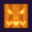

Resource Pack fuer Minecraft Java: gruselige Kuerbis-Gesichter und zwei Huete zum Aufsetzen.
Die Huete sind geschnitzte Kuerbisse mit Custom Model Data. Im Kreativmodus oder mit Cheats:
/give @s carved_pumpkin[custom_model_data={floats:[1001]}]/give @s carved_pumpkin[custom_model_data={floats:[1002]}]Vor Version 1.21.4: /give @s carved_pumpkin{CustomModelData:1001} bzw. 1002. Danach den Kuerbis in den Helm-Platz legen.
Erzeugt mit build.py. Alles selbst gemacht, keine fremden Inhalte.